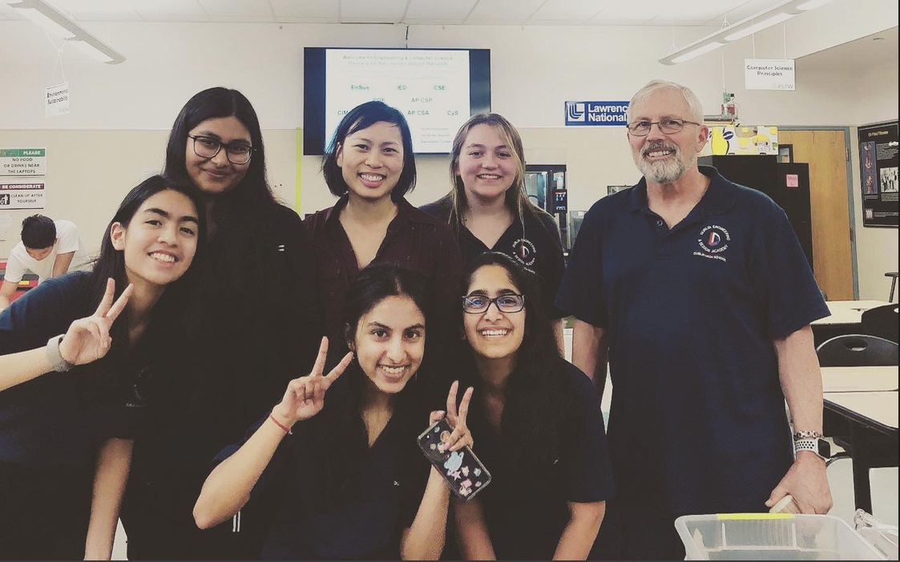
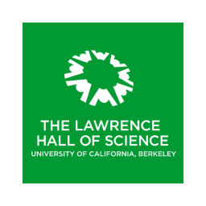
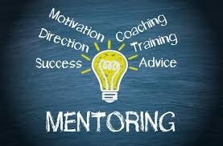

Volunteer Hours Accumulated: 70+ Hours
In addition to being in the work field, I am also an avid volunteer, at various school
and community events. As of now, I have completed over 70+ hours of volunteering,
and am ecstatic to continue this journey. As a volunteer, I have been able to work
with diverse groups of people, which have allowed me to improve my communication and
planning skills. Being a volunteer is extremely important to me, as it allows me to
interact with various members of my community, and ensure that I can utilize my
abilities to help other people. Volunteering will always be one of my passions, being
able to help others.

As mentioned before, I enjoy working with young kids, which has led me to volunteer at my
local elementary school. Some of the events that I have coordinated include Sandia Science
Fair Night, Family Art Night and John Green 10th Anniversary and Multicultural Fair. In the
Sandia Science Fair Night, I was able to help young students understand chemical reactions,
and show them a few demonstrations. When the same event was hosted at another local elementary
school, I was privileged to volunteer once again and explain chromatography to young children.
Another event that I helped coordinate was the Family Art Night, where I was able to help set
up the supplies for the event, and help parents and students get the essential supplies.
Another big event that I was a part of was the John Green 10th Anniversary and Multicultural
Fair, in which I began by setting up tents to showcase the various cultures, and ensured that
everyone received a space to set up their cultural demonstrations. After the initial setup,
I welcomed members of the community who came to the program and gave them information that
would allow them to enjoy the fair. Through these opportunities, I have been able to
collaborate with many parents, who lead the volunteering at the school and provide my
effort to create fun-filled events. Aside from volunteering at my local elementary school,
I have also volunteered for three years at the Freshman Open House at Dublin High School. In
this event, I would explain to the various parents and students, about the engineering academy
and the course Computer Science Engineering beginner course. Also, as a member of various clubs,
I have done many fundraising and publicizing events, to increase the club reach.

Lastly, my latest volunteering expedition has to lead me to be a part of
The Lawrence
Hall of Science, a volunteering team. Out of over 200 applicants, I was
selected to be a volunteer during the 2019 summer, in the Ingenuity Challenges
section of the hall. As a volunteer in this section, I was expected to foster an
interest in STEM fields for our various visitors and engage them in an iterative
engineering design process. Some of the activities that I explained about was
creating a prosthetic hand, pinball machines, and marble machines. For the prosthetic
hand portion, I would help young visitors to create a prosthetic hand using, string,
cardboard, and pipe cleaners. For the next two units of marble machines and pinball
machines, I would engage with young visitors and parents to create machines using recycled
materials. During this experience interacting with young students was very exciting
listening to their problems, and observing how they would change. During my 2019 summer
at the Hall, I accumulated a total of 33 hours, over 3 months. Next, I will be going
back next year as an intern, in the Ingenuity Challenges section for the summer of 2020.

I am also a part of the Dublin Freshman Mentorship Program, which helps incoming Freshman
adapt to the high school rigor and style. The mentorship program requires a commitment of
20 minutes every Monday, Tuesday, and Thursday, along with meeting twice a month on Wednesday.
When meeting the Freshman three times a week, as a mentorship we hold the responsibility of
ensuring that they can adapt to the new conditions, and are not falling behind in any situation.
Our mentorship program allows us to interact with a group of 20-25 Freshmen, along with a
teacher who serves as the overall advisor. Through this program, I was able to interact with new
students, who I would not have been able to create a bond with outside this program. As a large
group, all the mentors would also meet once a month, and learn about various strategies on how
to engage with the Freshman, and ensure that the program would be beneficial to them. We would
also have a meeting, with our advisor every month to improve the program in the small atmosphere.
This year we focused on making sure that all the Freshmen were welcomed, and have a mentor that
they are comfortable talking with about various subjects.